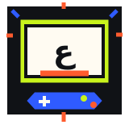

01 / TEAM
فريق مجد العروبة للتّعريب
Mjd Orouba
تعريب وتوطين سلسلة Metal Gear Solid، ومن الأعمال المذكورة MGS3 وMGS4 وPeace Walker.

وراء كل لعبة وصلت إلينا بلغتنا جهدٌ من مترجمين ومبرمجين وفرق شغوفة. هنا نسلّط الضوء على أصحاب هذه الجهود ونصل بك إلى منصاتهم الرسمية.
افتح بطاقة التفاصيل للتعرّف على المصدر والوصول إلى رابطه الرسمي
تعريب وتوطين سلسلة Metal Gear Solid، ومن الأعمال المذكورة MGS3 وMGS4 وPeace Walker.
تعريب الألعاب الضخمة والمستقلة على الحاسب الشخصي، ومن الأمثلة Elden Ring وStray.
تعريب ألعاب JRPG والألعاب اليابانية وألعاب الأنمي.
تعريب وتوطين الألعاب الجماعية والمستقلة، ومن الأمثلة Portal 2.
برمجة أدوات ومثبتات تعريب مفتوحة المصدر، ومن الأعمال المذكورة Final Fantasy Tactics وCrimson Moon.
تطوير البرمجيات ودعم اللغة العربية برمجيًا في لعبة البقاء Valheim.
تعريب السلاسل الكلاسيكية وألعاب تقمّص الأدوار، ومنها Final Fantasy III Pixel Remaster وDragon Quest 3.
تعريب وتعديل ألعاب الرعب والأكشن الكلاسيكية، ومنها سلسلة Silent Hill وGod Hand.
تقديم ملفات تعريب حصرية للألعاب المستقلة والكلاسيكية على الحاسب والكونسول.
ملاحظة تحريرية: نطاقات التخصص والأمثلة هنا من المعلومات التي زوّدنا بها صاحب المشروع؛ لا تمثل تصنيفًا حصريًا لأعمال هذه الجهات ولا حكمًا على اكتمال نشاطها الحالي.